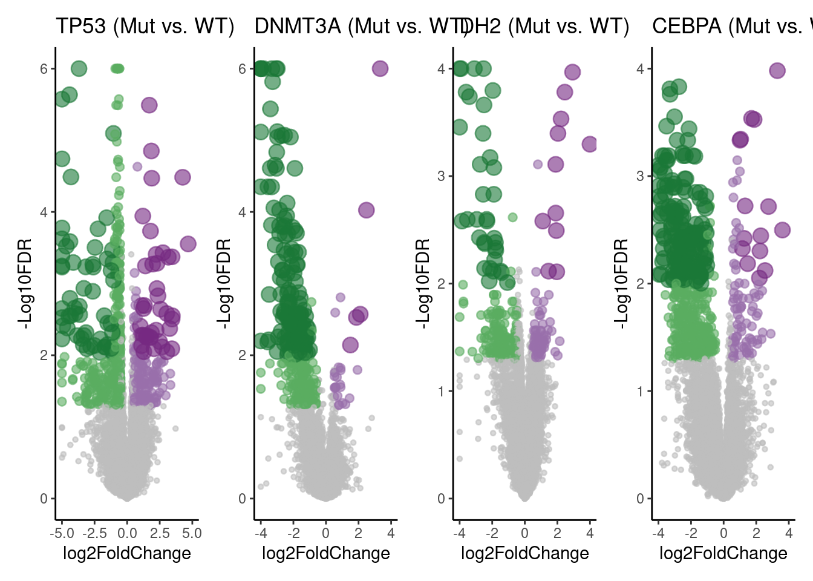

6.10 Differential Expression Analysis for Mut vs. WT
##########################################################################
### Differential Expression Analysis for Mut vs. WT
##########################################################################
# # Filter data for relevant samples
# source("RunDESeq2.R")
# mat <- read.table("../02.data/ID_matched_count_matrix.txt", header = T, row.names = 1)
# mat <- mat[, -c(1:2)]
# tpm <- read.table("../02.data/ID_matched_TPM_matrix.txt", header = TRUE, check.names = FALSE)
# sample_info <- read.csv("../02.data/rjaml_rf8_scores.csv", header = TRUE, check.names = FALSE)
# tpm <- tpm[, c("ID", "Symbol", "Type", as.character(sample_info$PatientID))]
#
# tpm <- subset(tpm, Type %in% c("protein_coding", "miRNA", "lincRNA", "antisense",
# "processed_transcript",
# "transcribed_processed_pseudogene", "transcribed_unitary_pseudogene",
# "transcribed_unprocessed_pseudogene","macro_lncRNA", "TEC",
# "3prime_overlapping_ncRNA","sense_intronic", "sense_overlapping",
# "unprocessed_pseudogene"))
#
# tpm <- tpm[which(rowMeans(tpm[, -c(1:3)]) > 0.5), ]
# tpm <- tpm[!duplicated(tpm$Symbol), ]
#
# ### TP53 Mutation vs. WT
# sample_info <- sample_info[order(sample_info$TP53), ]
# table(sample_info$TP53)
#
# mat <- mat[tpm$ID, sample_info$PatientID]
# tpm <- tpm[, c("ID", "Symbol", "Type", as.character(sample_info$PatientID))]
# # Run DESeq2 analysis
# RunDESeq2(count_mat = mat, n.cont = 100, n.treat = 10,
# prefix = "../03.out/figure5/DESeq2_out_TP53_Mut_WT",
# sort.p = FALSE,
# merge.normalized = TRUE,
# normalized_mat = tpm)
#
# ### DNMT3A Mutation vs. WT
# sample_info <- sample_info[order(sample_info$DNMT3A), ]
# table(sample_info$DNMT3A)
#
# mat <- mat[tpm$ID, sample_info$PatientID]
# tpm <- tpm[, c("ID", "Symbol", "Type", as.character(sample_info$PatientID))]
# # Run DESeq2 analysis
# RunDESeq2(count_mat = mat, n.cont = 83, n.treat = 27,
# prefix = "../03.out/figure5/DESeq2_out_DNMT3A_Mut_WT",
# sort.p = FALSE,
# merge.normalized = TRUE,
# normalized_mat = tpm)
#
# ### IDH2 Mutation vs. WT
# sample_info <- sample_info[order(sample_info$IDH2), ]
# table(sample_info$IDH2)
#
# mat <- mat[tpm$ID, sample_info$PatientID]
# tpm <- tpm[, c("ID", "Symbol", "Type", as.character(sample_info$PatientID))]
# # Run DESeq2 analysis
# RunDESeq2(count_mat = mat, n.cont = 84, n.treat = 26,
# prefix = "../03.out/figure5/DESeq2_out_IDH2_Mut_WT",
# sort.p = FALSE,
# merge.normalized = TRUE,
# normalized_mat = tpm)
#
# ### CEBPA Mutation vs. WT
# sample_info <- sample_info[order(sample_info$CEBPA), ]
# table(sample_info$CEBPA)
#
# mat <- mat[tpm$ID, sample_info$PatientID]
# tpm <- tpm[, c("ID", "Symbol", "Type", as.character(sample_info$PatientID))]
# # Run DESeq2 analysis
# RunDESeq2(count_mat = mat, n.cont = 100, n.treat = 10,
# prefix = "../03.out/figure5/DESeq2_out_CEBPA_Mut_WT",
# sort.p = FALSE,
# merge.normalized = TRUE,
# normalized_mat = tpm)library(patchwork)
source("plotVolcanoV3.R")
##### TP53
de_results <- read.table("../03.out/figure5/DESeq2_out_TP53_Mut_WT_with_normalized_mat.txt", header = TRUE)
de_results_filtered <- de_results[, 1:9]
degs_tp53 <- subset(de_results_filtered, abs(log2FoldChange) > 0.25 & padj < 0.05)
# Cap extreme values
de_results_filtered$log2FoldChange[de_results_filtered$log2FoldChange < -5] <- -5
de_results_filtered$log2FoldChange[de_results_filtered$log2FoldChange > 5] <- 5
de_results_filtered$padj[de_results_filtered$padj < 1e-6] <- 1e-6
# Generate volcano plot
volcano_plot1 <- plotVolcano(mat = de_results_filtered, gene.col = "Symbol", x.col = "log2FoldChange", y.col = "padj",
labx = "log2FoldChange", laby = "-Log10FDR",
x_cut1 = 0.5, x_cut2 = 1, y_cut1 = 0.05, y_cut2 = 0.01, x.lim = 5, y.lim = 6,
label = FALSE, title = "TP53 (Mut vs. WT)", selected_genes = "NA") + theme_classic()
##### DNMT3A
de_results <- read.table("../03.out/figure5/DESeq2_out_DNMT3A_Mut_WT_with_normalized_mat.txt", header = TRUE)
de_results_filtered <- de_results[, 1:9]
degs_dnmt3a <- subset(de_results_filtered, abs(log2FoldChange) > 0.25 & padj < 0.05)
# Cap extreme values
de_results_filtered$log2FoldChange[de_results_filtered$log2FoldChange < -4] <- -4
de_results_filtered$log2FoldChange[de_results_filtered$log2FoldChange > 4] <- 4
de_results_filtered$padj[de_results_filtered$padj < 1e-6] <- 1e-6
# Generate volcano plot
volcano_plot2 <- plotVolcano(mat = de_results_filtered, gene.col = "Symbol", x.col = "log2FoldChange", y.col = "padj",
labx = "log2FoldChange", laby = "-Log10FDR",
x_cut1 = 0.5, x_cut2 = 1, y_cut1 = 0.05, y_cut2 = 0.01, x.lim = 4, y.lim = 6,
label = FALSE, title = "DNMT3A (Mut vs. WT)", selected_genes = "NA") + theme_classic()
##### IDH2
de_results <- read.table("../03.out/figure5/DESeq2_out_IDH2_Mut_WT_with_normalized_mat.txt", header = TRUE)
de_results_filtered <- de_results[, 1:9]
degs_idh2 <- subset(de_results_filtered, abs(log2FoldChange) > 0.25 & padj < 0.05)
# Cap extreme values
de_results_filtered$log2FoldChange[de_results_filtered$log2FoldChange < -4] <- -4
de_results_filtered$log2FoldChange[de_results_filtered$log2FoldChange > 4] <- 4
de_results_filtered$padj[de_results_filtered$padj < 1e-4] <- 1e-4
# Generate volcano plot
volcano_plot3 <- plotVolcano(mat = de_results_filtered, gene.col = "Symbol", x.col = "log2FoldChange", y.col = "padj",
labx = "log2FoldChange", laby = "-Log10FDR",
x_cut1 = 0.5, x_cut2 = 1, y_cut1 = 0.05, y_cut2 = 0.01, x.lim = 4, y.lim = 4,
label = FALSE, title = "IDH2 (Mut vs. WT)", selected_genes = "NA") + theme_classic()
##### CEBPA
de_results <- read.table("../03.out/figure5/DESeq2_out_CEBPA_Mut_WT_with_normalized_mat.txt", header = TRUE)
de_results_filtered <- de_results[, 1:9]
degs_cebpa <- subset(de_results_filtered, abs(log2FoldChange) > 0.25 & padj < 0.05)
# Cap extreme values
de_results_filtered$log2FoldChange[de_results_filtered$log2FoldChange < -5] <- -5
de_results_filtered$log2FoldChange[de_results_filtered$log2FoldChange > 5] <- 5
de_results_filtered$padj[de_results_filtered$padj < 1e-6] <- 1e-6
# Generate volcano plot
volcano_plot4 <- plotVolcano(mat = de_results_filtered, gene.col = "Symbol", x.col = "log2FoldChange", y.col = "padj",
labx = "log2FoldChange", laby = "-Log10FDR",
x_cut1 = 0.5, x_cut2 = 1, y_cut1 = 0.05, y_cut2 = 0.01, x.lim = 4, y.lim = 4,
label = FALSE, title = "CEBPA (Mut vs. WT)", selected_genes = "NA") + theme_classic()
plots <- volcano_plot1|volcano_plot2|volcano_plot3|volcano_plot4
print(plots)
# Save volcano plot
# ggsave(plots, filename = "../03.out/figure5/DESeq2_valcanoplot.pdf", width = 12, height = 3)